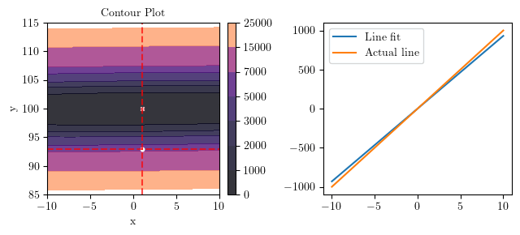

import numpy as np
import matplotlib.pyplot as plt
from mpl_toolkits.mplot3d import Axes3D
from mpl_toolkits.axes_grid1 import make_axes_locatable
from latex import latexify, format_axes
import torch
%config InlineBackend.figure_format = "retina"
%matplotlib inlineHelper Function for Plotting
def func_plot(x, y, xlabel = None, ylabel = None, title = None):
latexify(columns = 2, fig_width = 6)
plt.scatter(x, y)
plt.xlabel(xlabel)
plt.ylabel(ylabel)
plt.title(title)
plt.grid()
format_axes(plt.gca())def create_XYZ(f):
# Generate data
# x = np.linspace(-30, 40, 1000)
# y = np.linspace(-30, 30, 1000)
x = np.linspace(-10, 10, 1000)
y = np.linspace(85, 115, 1000)
# x = np.linspace(-5, 5, 100)
# y = np.linspace(-5, 5, 100)
X, Y = np.meshgrid(x, y)
# Convert to PyTorch tensors
X_torch = torch.from_numpy(X)
Y_torch = torch.from_numpy(Y)
# Evaluate the function
Z = f(X_torch, Y_torch)
return X, Y, Z, X_torch, Y_torch
def create_contour(X, Y, Z, ax2, alpha, scatter_pts=None, filled=True, levels=10, mark_levels=False):
if filled:
scatter_color='white'
contour = ax2.contourf(X, Y, Z.detach().numpy(), levels=levels, cmap='magma', alpha=alpha)
else:
scatter_color='black'
contour = ax2.contour(X, Y, Z.detach().numpy(), levels=levels, cmap='magma', alpha=alpha)
if scatter_pts is not None:
ax2.scatter(scatter_pts[0], scatter_pts[1], s=10, c=scatter_color)
ax2.set_xlabel('x')
ax2.set_ylabel('y')
ax2.set_title('Contour Plot')
# Add a colorbar in between the subplots
divider = make_axes_locatable(ax2)
cax = divider.append_axes("right", size="5%", pad=0.1)
cbar = plt.colorbar(contour, cax=cax)
return ax2, contour
def plot_surface_and_contour(f, uv = None, stride=4, alpha=1, scatter_pts=None, filled=True, levels=10):
X, Y, Z, X_torch, Y_torch = create_XYZ(f)
# Create the single figure with two subplots
fig = plt.figure()
# Plot the 3D surface on the first subplot
ax1 = fig.add_subplot(121, projection='3d')
ax1.plot_surface(X, Y, Z.detach().numpy(), cmap='magma', edgecolor='none', alpha=alpha) # Remove grid lines
ax1.set_xlabel('x')
ax1.set_ylabel('y')
ax1.set_zlabel('z')
ax1.grid(False)
ax1.xaxis.pane.fill = False
ax1.yaxis.pane.fill = False
ax1.zaxis.pane.fill = False
ax1.view_init(elev=30, azim=30)
ax1.set_title('Surface Plot')
if scatter_pts is not None:
ax1.scatter(scatter_pts[0], scatter_pts[1], f(scatter_pts[0], scatter_pts[1]), s=100, c='black')
# Plot the contour plot on the second subplot
ax2 = fig.add_subplot(122, aspect='equal') # Set 1:1 aspect ratio
ax2, contour = create_contour(X, Y, Z, ax2, alpha, scatter_pts, filled, levels)
if uv is not None:
u = uv[0](X_torch, Y_torch)
v = uv[1](X_torch, Y_torch)
# Quiver plot for gradient
ax2.quiver(X[::stride, ::stride], Y[::stride, ::stride], u[::stride, ::stride].detach().numpy(),
v[::stride, ::stride].detach().numpy(), scale=140)
plt.tight_layout(pad=1.0, w_pad=1.0)
# Example usage:
# Define your function f(x, y) and its gradient g(x, y)
#f = lambda x, y: x**2 + y**2
#g = lambda x, y: (2*x, 2*y)
#plot_surface_and_contour(f, "x_squared_plus_y_squared", uv=(lambda x, y: 2*x, lambda x, y: 2*y))plot_surface_and_contour(lambda x, y: x**2 + y**2, uv=(lambda x, y: 2*x, lambda x, y: 2*y))Dataset1 \(y = 100x + 1 + \epsilon\)
latexify(columns = 2, fig_width = 6)
num_samples = 40
np.random.seed(45)
# Generate data
x1 = np.random.uniform(-20, 20, num_samples)
f_x = 100*x1 + 1
eps = np.random.randn(num_samples)
y1 = f_x + eps
func_plot(x1, y1, xlabel = "$x$", ylabel = "$y$", title = "$y = 100x + 1 + \epsilon$")Dataset2 \(y = 3x + 4 + \epsilon\)
np.random.seed(45)
num_samples = 40
# Generate data
x2 = np.random.uniform(-1, 1, num_samples)
f_x = 3*x2 + 4
eps = np.random.randn(num_samples)
y2 = f_x + eps
func_plot(x2, y2, xlabel = "$x$", ylabel = "$y$", title = "$y = 3x + 4 + \epsilon$")Calculation
\(\hat{y_i} = \theta_0 + \theta_1x_i\)
\(\epsilon_i(\theta_0, \theta_1) = y_i - \hat{y_i} = y_i - \theta_0 - \theta_1x_i\)
Loss Function - MSE
\[L(\theta_0, \theta_1) = \frac{1}{N} \underset{i}{\operatorname{\sum}} \epsilon_i^2(\theta_0, \theta_1)\]
\(\frac{\partial L(\theta_0, \theta_1)}{\partial \theta_0} = \frac{2}{N} \underset{i}{\operatorname{\sum}} (y_i - \theta_0 - \theta_1x_i)(-1) = \frac{2}{N} \underset{i}{\operatorname{\sum}} \epsilon_i(-1)\)
\(\frac{\partial L(\theta_0, \theta_1)}{\partial \theta_1} = \frac{2}{N} \underset{i}{\operatorname{\sum}} (y_i - \theta_0 - \theta_1x_i)(-x_i) = \frac{2}{N} \underset{i}{\operatorname{\sum}} \epsilon_i(-x_i)\)
Gradient Descent \(\alpha \approx 0.0 - 0.1\) with Momentum \(p \approx 0.9 - 1.0\)
\[ \Delta \theta_0^i = p \Delta \theta_0^{i - 1} + (1 - p) \frac{\partial L^i(\theta_0, \theta_1)}{\partial \theta_0} \]
\[ \Delta \theta_1^i = p \Delta \theta_1^{i - 1} + (1 - p) \frac{\partial L^i(\theta_0, \theta_1)}{\partial \theta_1} \]
\[ \theta_0^{i + 1} = \theta_0^i - \alpha \Delta \theta_0^i \]
\[ \theta_1^{i + 1} = \theta_1^i - \alpha \Delta \theta_1^i \]
The Coefficients of \(L(\theta_0, \theta_1)\) Function
\(L(\theta_0, \theta_1) = \frac{1}{N} \underset{i}{\operatorname{\sum}} \epsilon_i^2(\theta_0, \theta_1) = \frac{1}{N} \underset{i}{\operatorname{\sum}} (y_i - \theta_0 - \theta_1x_i)^2\)
$ = ((y_i)^2 + (_0)^2 + (_1x_i)^2 - 2y_i_0 + 2_0 _1 x_i - 2_1 x_i y_i)$
\(L(\theta_0, \theta_1) = \frac{1}{N} (1 \times (\underset{i}{\operatorname{\sum}}y_i^2) + \theta_0 \times (-2 \underset{i}{\operatorname{\sum}} y_i) + \theta_1 \times (-2 \underset{i}{\operatorname{\sum}} x_iy_i) + \theta_0^2 \times (N) + \theta_1^2 \times (\underset{i}{\operatorname{\sum}} x_i^2) + \theta_0\theta_1 \times (2 \underset{i}{\operatorname{\sum}} x_i))\)
\[ L(\theta_0, \theta_1) = 1 \times (c_0) + \theta_0 \times (c_1) + \theta_1 \times (c_2) + \theta_0^2 \times (c_3) + \theta_1^2 \times (c_4) + \theta_0\theta_1 \times (c_5) \]
Dataset1
def generate_coeff(x, y):
N = len(x)
return np.sum(y**2)/N, -2 * np.sum(y)/N, -2 * np.sum(x * y)/N, 1, np.sum(x**2)/N, 2 * np.sum(x)/Ndef L(th0, th1):
c0, c1, c2, c3, c4, c5 = generate_coeff(x1, y1)
return c0 + c1*th0 + c2*th1 + c3*th0**2 + c4*th1**2 + c5*th0*th1plot_surface_and_contour(L)x0, y0 = torch.tensor(1.0), torch.tensor(93.0)
v0, v1 = torch.tensor(0.0), torch.tensor(0.0)
del_x, del_y = torch.func.grad(L, argnums=(0, 1))(x0, y0)
print(del_x, del_y)tensor(23.7581) tensor(-1764.8730)def visualiz̀e_descent(L, x0, y0, v0, v1, levels, folderName, filename, t0, t1, alpha, p):
losses = []
latexify(columns=2, fig_width=6.5, fig_height=3)
X, Y, Z, X_torch, Y_torch = create_XYZ(L)
epsilon = 1e-3
xi = x0
yi = y0
vi = v0
wi = v1
for i in range(15):
fig, ax = plt.subplots(ncols=2)
_, _ = create_contour(X, Y, Z, ax[0], alpha=0.8, scatter_pts=(xi, yi), filled=True, levels = levels)
# Mark the minima with horizontal and vertical lines
ax[0].axhline(y=yi, color='red', linestyle='--', alpha=0.7)
ax[0].axvline(x=xi, color='red', linestyle='--', alpha=0.7)
ax[0].scatter([t0], [t1], s=10, c='pink', marker='x', label='Minima')
del_x, del_y = torch.func.grad(L, argnums=(0, 1))(xi, yi)
vi = p * vi + (1 - p) * del_x
wi = p * wi + (1 - p) * del_y
xi = xi - alpha * vi
yi = yi - alpha * wi
losses.append(L(xi, yi))
print(f"Epoch No. {i + 1} -> {xi}, {yi}, Loss: {L(xi, yi)}")
if (torch.linalg.norm(torch.tensor([xi - t0, yi - t1])) < epsilon):
break
# plot the line fit
x_line = np.linspace(-10, 10, 100)
y_line = xi + yi*x_line
ax[1].plot(x_line, y_line, label='Line fit')
# ax[1].set_ylim(-1, 7)
ax[1].plot(x_line, t1*x_line + t0, label='Actual line')
ax[1].legend()
plt.tight_layout()
plt.savefig(f"./{folderName}/{filename}-{i}.png", bbox_inches="tight")
return lossesloss1 = visualize_descent(L, x0, y0, v0, v1, [0, 1000, 2000, 3000, 5000, 7000, 15000, 25000], "D1LMedia", "d", 1, 100, 0.005, 0.99)Epoch No. 1 -> 0.9988120794296265, 93.08824157714844, Loss: 6009.27734375
Epoch No. 2 -> 0.9964632391929626, 93.26273345947266, Loss: 5709.30419921875
Epoch No. 3 -> 0.9929947853088379, 93.52040100097656, Loss: 5279.908203125
Epoch No. 4 -> 0.988461971282959, 93.85716247558594, Loss: 4743.96630859375
Epoch No. 5 -> 0.9829329252243042, 94.2679672241211, Loss: 4129.1064453125
Epoch No. 6 -> 0.9764877557754517, 94.74688720703125, Loss: 3466.33056640625
Epoch No. 7 -> 0.9692173600196838, 95.28718566894531, Loss: 2788.14013671875
Epoch No. 8 -> 0.961222231388092, 95.88142395019531, Loss: 2127.035888671875
Epoch No. 9 -> 0.9526110887527466, 96.52155303955078, Loss: 1515.26708984375
Epoch No. 10 -> 0.9434993863105774, 97.19902801513672, Loss: 980.5810546875
Epoch No. 11 -> 0.9340077638626099, 97.90491485595703, Loss: 546.472900390625
Epoch No. 12 -> 0.9242605566978455, 98.6300048828125, Loss: 232.1854248046875
Epoch No. 13 -> 0.914384126663208, 99.36495208740234, Loss: 48.958770751953125
Epoch No. 14 -> 0.90450519323349, 100.1003646850586, Loss: 2.40576171875
Epoch No. 15 -> 0.8947493433952332, 100.82694244384766, Loss: 90.51165771484375Visualization for Dataset1

def loss_plot(loss, xlabel, ylabel, title):
latexify(columns = 2, fig_width = 6)
plt.plot(range(1, len(loss) + 1), loss, marker = "o", label = "Loss", color = "green")
plt.xlabel(xlabel)
plt.ylabel(ylabel)
plt.title(title)
plt.grid()
plt.legend()
format_axes(plt.gca())epsilon = 0.001
for i in range(1, len(loss1)):
change_in_loss = np.abs(loss1[i] - loss1[i-1])
print(change_in_loss)
if change_in_loss < epsilon:
print(f"Converged at iteration {i}")
breaktensor(299.9731)
tensor(429.3960)
tensor(535.9419)
tensor(614.8599)
tensor(662.7759)
tensor(678.1904)
tensor(661.1042)
tensor(611.7688)
tensor(534.6860)
tensor(434.1082)
tensor(314.2875)
tensor(183.2267)
tensor(46.5530)
tensor(88.1059)loss_plot(loss1, xlabel = "Epoch Number", ylabel = r"$L(\theta_0, \theta_1)$", title = "Loss vs Epoch Number - Dataset 1")Dataset2
def L1(th0, th1):
c0, c1, c2, c3, c4, c5 = generate_coeff(x2, y2)
return c0 + c1*th0 + c2*th1 + c3*th0**2 + c4*th1**2 + c5*th0*th1plot_surface_and_contour(L1)x0, y0 = torch.tensor(35.0), torch.tensor(-25.0)
v0, v1 = torch.tensor(1.0), torch.tensor(0.0)
del_x, del_y = torch.func.grad(L1, argnums=(0, 1))(x0, y0)
print(del_x, del_y)tensor(66.7875) tensor(-22.7458)loss2 = visualize_descent(L1, x0, y0, v0, v1, [0, 100, 200, 300, 400, 500, 600, 800, 1000, 1200], "D2LMedia", "d", 4, 3, 0.75, 0.25)Epoch No. 1 -> 30.638282775878906, -23.57839012145996, Loss: 1049.346435546875
Epoch No. 2 -> 23.753042221069336, -21.192873001098633, Loss: 652.8497924804688
Epoch No. 3 -> 15.861068725585938, -18.251495361328125, Loss: 323.0963439941406
Epoch No. 4 -> 8.231679916381836, -15.0928955078125, Loss: 131.60641479492188
Epoch No. 5 -> 1.7863411903381348, -11.976848602294922, Loss: 67.77926635742188
Epoch No. 6 -> -2.932304859161377, -9.083971977233887, Loss: 77.9818115234375
Epoch No. 7 -> -5.735476016998291, -6.522637367248535, Loss: 106.07808685302734
Epoch No. 8 -> -6.72452974319458, -4.340756416320801, Loss: 117.43630981445312
Epoch No. 9 -> -6.206265449523926, -2.5400781631469727, Loss: 103.38958740234375
Epoch No. 10 -> -4.603233337402344, -1.0909062623977661, Loss: 72.79557800292969
Epoch No. 11 -> -2.3716626167297363, 0.054392099380493164, Loss: 39.935184478759766
Epoch No. 12 -> 0.06448984146118164, 0.9501926302909851, Loss: 15.505937576293945
Epoch No. 13 -> 2.3590428829193115, 1.6492931842803955, Loss: 3.187753438949585
Epoch No. 14 -> 4.267978191375732, 2.197558879852295, Loss: 0.7967417240142822
Epoch No. 15 -> 5.6548871994018555, 2.6312613487243652, Loss: 3.5155951976776123
Visualization for Dataset2

epsilon = 0.001
for i in range(1, len(loss2)):
change_in_loss = np.abs(loss2[i] - loss2[i-1])
print(change_in_loss)
if change_in_loss < epsilon:
print(f"Converged at iteration {i}")
breaktensor(396.4966)
tensor(329.7534)
tensor(191.4899)
tensor(63.8271)
tensor(10.2025)
tensor(28.0963)
tensor(11.3582)
tensor(14.0467)
tensor(30.5940)
tensor(32.8604)
tensor(24.4292)
tensor(12.3182)
tensor(2.3910)
tensor(2.7189)loss_plot(loss2, xlabel = "Epoch Number", ylabel = r"$L(\theta_0, \theta_1)$", title = "Loss vs Epoch Number - Dataset 2")Stochastic Gradient Descent
def visualize_sdg(x, y, x0, y0, v0, v1, epochs, levels, folderName, filename, t0, t1, alpha, p):
losses = []
latexify(columns=2, fig_width=6.5, fig_height=3)
epsilon = 1e-3
xi = x0
yi = y0
vi = v0
wi = v1
c = 0
for i in range(epochs):
shuffle_idx = np.random.permutation(len(x))
x, y = x[shuffle_idx], y[shuffle_idx]
for j in range(len(x)):
def L(theta0, theta1):
return (y[j] - theta0 - theta1*x[j])**2
X, Y, Z, X_torch, Y_torch = create_XYZ(L)
if (j % 10 == 0):
fig, ax = plt.subplots()
_, _ = create_contour(X, Y, Z, ax, alpha=0.8, scatter_pts=(xi, yi), filled=True, levels = levels)
# Mark the minima with horizontal and vertical lines
fig.suptitle(fr"Epoch No. {i + 1} Iteration No. {j + 1} $L(\theta_0, \theta_1) = ({y[j]} - \theta_0 - {x[j]}\theta_1)^2$", fontsize = 8)
ax.axhline(y=yi, color='red', linestyle='--', alpha=0.7)
ax.axvline(x=xi, color='red', linestyle='--', alpha=0.7)
ax.scatter([t0], [t1], s=10, c='pink', marker='x', label='Minima')
del_x, del_y = torch.func.grad(L, argnums=(0, 1))(xi, yi)
losses.append(L(xi, yi))
vi = p * vi + (1 - p) * del_x
wi = p * wi + (1 - p) * del_y
xi = xi - alpha * vi
yi = yi - alpha * wi
if (torch.linalg.norm(torch.tensor([xi - t0, yi - t1])) < epsilon):
break
if (j % 10 == 0):
print(f"Epoch No. {i + 1} Iteration No. {j + 1} -> {xi}, {yi}, Loss = {L(xi, yi)}, Nbhd = {torch.linalg.norm(torch.tensor([xi - t0, yi - t1]))}")
# plt.tight_layout()
plt.savefig(f"./{folderName}/{filename}-{c}.png", bbox_inches="tight")
plt.close()
c += 1
print()
return lossesSDG for Dataset2
loss2_1 = visualize_sdg(x2, y2, torch.tensor(35.0), torch.tensor(-25.0), torch.tensor(1.0), torch.tensor(0.0), 15, [0, 100, 200, 300, 400, 500, 600, 800, 1000, 1200], "D4LMedia", "d", 4, 3, 0.25, 0.75)Epoch No. 1 Iteration No. 1 -> 33.88819122314453, -25.782241821289062, Loss = 31.591655731201172, Nbhd = 41.493629455566406
Epoch No. 1 Iteration No. 11 -> -5.374091148376465, 7.283072471618652, Loss = 84.57054138183594, Nbhd = 10.30622673034668
Epoch No. 1 Iteration No. 21 -> 4.751775741577148, 9.97638988494873, Loss = 68.13531494140625, Nbhd = 7.016778945922852
Epoch No. 1 Iteration No. 31 -> 4.536127090454102, 0.919632613658905, Loss = 2.2669684886932373, Nbhd = 2.148339033126831
Epoch No. 2 Iteration No. 1 -> 4.158503532409668, 2.4186503887176514, Loss = 2.323333740234375, Nbhd = 0.602570116519928
Epoch No. 2 Iteration No. 11 -> 3.5401451587677, 3.007066011428833, Loss = 0.017487842589616776, Nbhd = 0.4599091410636902
Epoch No. 2 Iteration No. 21 -> 3.7525289058685303, 2.1846675872802734, Loss = 0.022711344063282013, Nbhd = 0.8520615696907043
Epoch No. 2 Iteration No. 31 -> 3.874723196029663, 2.99967360496521, Loss = 0.03295465558767319, Nbhd = 0.12527722120285034
Epoch No. 3 Iteration No. 1 -> 3.9543545246124268, 2.65336012840271, Loss = 0.061587825417518616, Nbhd = 0.34963226318359375
Epoch No. 3 Iteration No. 11 -> 3.449183702468872, 2.1453373432159424, Loss = 0.30850061774253845, Nbhd = 1.0167826414108276
Epoch No. 3 Iteration No. 21 -> 4.1094069480896, 1.9433906078338623, Loss = 0.756882905960083, Nbhd = 1.0622586011886597
Epoch No. 3 Iteration No. 31 -> 3.6678225994110107, 2.7688119411468506, Loss = 0.45271751284599304, Nbhd = 0.40470945835113525
Epoch No. 4 Iteration No. 1 -> 3.801668167114258, 3.2535648345947266, Loss = 0.011469850316643715, Nbhd = 0.3219171464443207
Epoch No. 4 Iteration No. 11 -> 4.038174629211426, 3.4748706817626953, Loss = 0.0007659140392206609, Nbhd = 0.4764026403427124
Epoch No. 4 Iteration No. 21 -> 4.242336273193359, 2.9407427310943604, Loss = 1.4305999279022217, Nbhd = 0.24947604537010193
Epoch No. 4 Iteration No. 31 -> 3.9689035415649414, 1.8086127042770386, Loss = 0.07037045061588287, Nbhd = 1.1917930841445923
Epoch No. 5 Iteration No. 1 -> 3.7240567207336426, 2.3159751892089844, Loss = 0.9527010917663574, Nbhd = 0.737587034702301
Epoch No. 5 Iteration No. 11 -> 4.395046710968018, 3.1973795890808105, Loss = 1.4096605777740479, Nbhd = 0.4416113793849945
Epoch No. 5 Iteration No. 21 -> 3.6081748008728027, 2.8153324127197266, Loss = 2.1054742336273193, Nbhd = 0.43316176533699036
Epoch No. 5 Iteration No. 31 -> 3.7746448516845703, 2.6530251502990723, Loss = 0.001293873181566596, Nbhd = 0.4137348234653473
Epoch No. 6 Iteration No. 1 -> 3.8919897079467773, 2.391568660736084, Loss = 0.08173397183418274, Nbhd = 0.6179441213607788
Epoch No. 6 Iteration No. 11 -> 4.037834167480469, 2.182591438293457, Loss = 0.04477541893720627, Nbhd = 0.8182836771011353
Epoch No. 6 Iteration No. 21 -> 3.673105478286743, 3.154024600982666, Loss = 1.1377997398376465, Nbhd = 0.3613635301589966
Epoch No. 6 Iteration No. 31 -> 4.297133922576904, 3.1540143489837646, Loss = 0.024644941091537476, Nbhd = 0.33467742800712585
Epoch No. 7 Iteration No. 1 -> 4.201237678527832, 2.2428081035614014, Loss = 2.056556463241577, Nbhd = 0.7834769487380981
Epoch No. 7 Iteration No. 11 -> 3.8476054668426514, 2.433769464492798, Loss = 1.4263286590576172, Nbhd = 0.5863796472549438
Epoch No. 7 Iteration No. 21 -> 4.018364906311035, 2.734009027481079, Loss = 1.860943078994751, Nbhd = 0.26662421226501465
Epoch No. 7 Iteration No. 31 -> 4.482729434967041, 3.093228578567505, Loss = 0.39899659156799316, Nbhd = 0.4916495382785797
Epoch No. 8 Iteration No. 1 -> 4.113456726074219, 2.4911856651306152, Loss = 1.9741719961166382, Nbhd = 0.5213103294372559
Epoch No. 8 Iteration No. 11 -> 3.8219592571258545, 2.327929735183716, Loss = 0.21301992237567902, Nbhd = 0.6952531337738037
Epoch No. 8 Iteration No. 21 -> 3.583648920059204, 2.4250755310058594, Loss = 0.0010889837285503745, Nbhd = 0.7098495364189148
Epoch No. 8 Iteration No. 31 -> 4.731677055358887, 3.055652618408203, Loss = 2.079366445541382, Nbhd = 0.7337905764579773
Epoch No. 9 Iteration No. 1 -> 3.6256003379821777, 2.770031452178955, Loss = 0.007088981568813324, Nbhd = 0.43938666582107544
Epoch No. 9 Iteration No. 11 -> 3.428339958190918, 3.0833497047424316, Loss = 0.0004803222545888275, Nbhd = 0.5777043700218201
Epoch No. 9 Iteration No. 21 -> 4.319526672363281, 2.2095580101013184, Loss = 0.8529860973358154, Nbhd = 0.8525818586349487
Epoch No. 9 Iteration No. 31 -> 3.726933479309082, 2.629763603210449, Loss = 0.1354113668203354, Nbhd = 0.4600438177585602
Epoch No. 10 Iteration No. 1 -> 4.6512017250061035, 2.2928197383880615, Loss = 0.17980362474918365, Nbhd = 0.9613363742828369
Epoch No. 10 Iteration No. 11 -> 3.962782382965088, 2.6071465015411377, Loss = 0.9672736525535583, Nbhd = 0.39461249113082886
Epoch No. 10 Iteration No. 21 -> 3.9321045875549316, 2.394702196121216, Loss = 0.014159280806779861, Nbhd = 0.6090937852859497
Epoch No. 10 Iteration No. 31 -> 3.992889165878296, 2.3233375549316406, Loss = 0.21419423818588257, Nbhd = 0.6766998171806335
Epoch No. 11 Iteration No. 1 -> 4.836158752441406, 3.1715548038482666, Loss = 0.01685412786900997, Nbhd = 0.8535763025283813
Epoch No. 11 Iteration No. 11 -> 3.928997039794922, 3.1560699939727783, Loss = 0.2169146090745926, Nbhd = 0.17146213352680206
Epoch No. 11 Iteration No. 21 -> 4.055086135864258, 2.7719786167144775, Loss = 0.49175935983657837, Nbhd = 0.23458097875118256
Epoch No. 11 Iteration No. 31 -> 3.433013916015625, 3.0276038646698, Loss = 0.07988596707582474, Nbhd = 0.5676576495170593
Epoch No. 12 Iteration No. 1 -> 4.019072532653809, 2.1760857105255127, Loss = 0.37585461139678955, Nbhd = 0.8241350054740906
Epoch No. 12 Iteration No. 11 -> 3.601017951965332, 2.633387565612793, Loss = 0.037653256207704544, Nbhd = 0.5418407320976257
Epoch No. 12 Iteration No. 21 -> 3.8550198078155518, 2.258765697479248, Loss = 1.5918165445327759, Nbhd = 0.7552797794342041
Epoch No. 12 Iteration No. 31 -> 4.255411624908447, 2.7007999420166016, Loss = 0.39929816126823425, Nbhd = 0.39339008927345276
Epoch No. 13 Iteration No. 1 -> 3.8211147785186768, 2.5247223377227783, Loss = 0.001756182755343616, Nbhd = 0.5078275203704834
Epoch No. 13 Iteration No. 11 -> 4.0275373458862305, 2.9641470909118652, Loss = 0.09839397668838501, Nbhd = 0.04520770162343979
Epoch No. 13 Iteration No. 21 -> 3.697176456451416, 2.9386942386627197, Loss = 0.002137749223038554, Nbhd = 0.30896681547164917
Epoch No. 13 Iteration No. 31 -> 3.993926763534546, 2.2985923290252686, Loss = 0.5834277868270874, Nbhd = 0.7014339566230774
Epoch No. 14 Iteration No. 1 -> 3.8619272708892822, 2.0683178901672363, Loss = 1.346258282661438, Nbhd = 0.9418575167655945
Epoch No. 14 Iteration No. 11 -> 4.462649345397949, 2.0885016918182373, Loss = 0.27577319741249084, Nbhd = 1.0221905708312988
Epoch No. 14 Iteration No. 21 -> 3.1519055366516113, 2.7769808769226074, Loss = 1.3084139823913574, Nbhd = 0.8769274353981018
Epoch No. 14 Iteration No. 31 -> 4.147059440612793, 3.3320467472076416, Loss = 1.5321136713027954, Nbhd = 0.36315494775772095
Epoch No. 15 Iteration No. 1 -> 3.974435329437256, 2.127532720565796, Loss = 1.4957369565963745, Nbhd = 0.8728417158126831
Epoch No. 15 Iteration No. 11 -> 3.736220598220825, 2.6339504718780518, Loss = 0.09563076496124268, Nbhd = 0.4511893391609192
Epoch No. 15 Iteration No. 21 -> 3.623706579208374, 2.205655097961426, Loss = 0.4725140631198883, Nbhd = 0.8789656162261963
Epoch No. 15 Iteration No. 31 -> 3.878955602645874, 2.6124846935272217, Loss = 0.4477497637271881, Nbhd = 0.4059801399707794
SDG Visualization for Dataset2
epsilon = 0.001
for i in range(1, len(loss2_1)):
change_in_loss = np.abs(loss2_1[i] - loss2_1[i-1])
print(change_in_loss, end = " ")
if change_in_loss < epsilon:
print(f"Converged at iteration {i}")
breaktensor(47.5518) tensor(2088.0500) tensor(1602.9125) tensor(644.3042) tensor(705.9775) tensor(24.2093) tensor(369.7652) tensor(63.6267) tensor(53.7489) tensor(56.4815) tensor(84.9328) tensor(13.2858) tensor(37.7679) tensor(38.5442) tensor(48.2450) tensor(4.2036) tensor(3.7683) tensor(62.7469) tensor(30.4186) tensor(116.1941) tensor(123.1146) tensor(14.7736) tensor(10.6224) tensor(4.4955) tensor(4.4424) tensor(4.4815) tensor(5.2177) tensor(0.0052) tensor(0.5453) tensor(2.0044) tensor(2.2920) tensor(4.4313) tensor(0.3916) tensor(3.6789) tensor(2.1128) tensor(1.4046) tensor(0.3878) tensor(0.4156) tensor(0.7219) tensor(4.1895) tensor(4.0835) tensor(0.3683) tensor(0.8145) tensor(0.4426) tensor(0.0148) tensor(1.4114) tensor(1.2782) tensor(2.4375) tensor(1.9629) tensor(2.3912) tensor(0.1137) tensor(3.1645) tensor(2.8844) tensor(0.0220) tensor(0.5870) tensor(0.0097) tensor(1.4968) tensor(1.4966) tensor(0.4747) tensor(0.4712) tensor(0.8334) tensor(0.7764) tensor(1.0009) tensor(0.9679) tensor(2.5390) tensor(2.4127) tensor(0.3721) tensor(0.0323) tensor(0.1940) tensor(0.2371) tensor(3.4380) tensor(3.5428) tensor(0.9007) tensor(0.5543) tensor(0.3564) tensor(0.3217) tensor(0.6649) tensor(0.8923) tensor(0.7902) tensor(1.0996) tensor(1.8412) tensor(1.7163) tensor(0.1285) tensor(0.1057) tensor(2.4844) tensor(2.6274) tensor(0.4858) tensor(0.9273) tensor(1.2926) tensor(0.1197) tensor(1.5680) tensor(1.0887) tensor(0.5387) tensor(0.0738) tensor(0.1047) tensor(0.2283) tensor(0.9708) tensor(0.6415) tensor(0.0764) tensor(0.2940) tensor(1.0506) tensor(0.0204) tensor(0.0142) tensor(0.0687) tensor(2.3604) tensor(2.3895) tensor(0.1205) tensor(2.2426) tensor(2.2199) tensor(0.5113) tensor(0.4076) tensor(0.1867) tensor(0.0702) tensor(3.4388) tensor(3.4688) tensor(0.0083) tensor(3.9507) tensor(0.1074) tensor(3.1345) tensor(0.8959) tensor(0.4627) tensor(0.6551) tensor(1.5677) tensor(1.8269) tensor(0.8921) tensor(0.1536) tensor(0.0225) tensor(0.1742) tensor(0.0230) tensor(0.0241) tensor(0.0212) tensor(0.1250) tensor(1.8404) tensor(1.1434) tensor(0.4394) tensor(0.2126) tensor(0.3363) tensor(1.5962) tensor(0.6153) tensor(0.3968) tensor(2.0634) tensor(0.6856) tensor(0.0079) tensor(0.1584) tensor(1.5969) tensor(2.2606) tensor(0.1659) tensor(0.1235) tensor(1.6862) tensor(1.7235) tensor(1.3302) tensor(1.2699) tensor(0.1045) tensor(5.7110) tensor(6.0020) tensor(0.0015) tensor(0.6046) tensor(0.5314) tensor(0.0572) tensor(1.1916) tensor(1.1652) tensor(0.0276) tensor(2.3217) tensor(2.0483) tensor(1.5762) tensor(3.5163) tensor(5.2532) tensor(0.0943) tensor(0.0146) tensor(2.0679) tensor(1.1077) tensor(0.9743) tensor(0.3320) tensor(0.2362) tensor(1.7185) tensor(1.2824) tensor(3.5752) tensor(0.7138) tensor(1.0122) tensor(0.7018) tensor(1.8875) tensor(0.1557) tensor(1.6486) tensor(2.1433) tensor(0.0276) tensor(0.4163) tensor(0.2853) tensor(0.2324) tensor(0.5517) tensor(0.6202) tensor(0.8064) tensor(0.8096) tensor(0.0255) tensor(0.0948) tensor(0.0140) tensor(0.4032) tensor(0.2759) tensor(0.1204) tensor(0.2812) tensor(0.3252) tensor(0.0194) tensor(0.1243) tensor(0.8290) tensor(0.5407) tensor(0.6016) tensor(0.1322) tensor(0.5577) tensor(3.7319) tensor(2.0143) tensor(1.8664) tensor(1.2161) tensor(0.2651) tensor(1.2826) tensor(0.2691) tensor(0.0119) tensor(0.2581) tensor(2.8708) tensor(3.2893) tensor(2.9182) tensor(1.7270) tensor(1.1579) tensor(0.5882) tensor(0.6039) tensor(0.3814) tensor(0.2742) tensor(0.6805) tensor(1.3954) tensor(1.3408) tensor(0.0891) tensor(0.1302) tensor(1.5754) tensor(1.5518) tensor(0.5349) tensor(0.3298) tensor(0.0917) tensor(0.1478) tensor(4.3181) tensor(3.5656) tensor(0.6468) tensor(2.2702) tensor(1.7739) tensor(0.0904) tensor(0.5087) tensor(0.6051) tensor(0.4325) tensor(0.3114) tensor(1.1895) tensor(0.3892) tensor(0.2704) tensor(1.1664) tensor(2.0981) tensor(0.1041) tensor(0.0524) tensor(0.1399) tensor(1.5749) tensor(1.0686) tensor(0.1952) tensor(0.2023) tensor(0.3563) tensor(2.6500) tensor(0.4485) tensor(1.3853) tensor(3.5515) tensor(0.1172) tensor(0.3645) tensor(0.1354) tensor(0.3797) tensor(0.9237) tensor(0.3086) tensor(0.1133) tensor(0.2752) tensor(2.7168) tensor(2.9513) tensor(0.0249) tensor(0.6444) tensor(0.6423) tensor(0.0791) tensor(2.8700) tensor(2.7771) tensor(1.8632) tensor(1.9738) tensor(1.1178) tensor(0.2376) tensor(1.1625) tensor(0.1969) tensor(0.0638) tensor(0.0179) tensor(0.4888) tensor(4.3499) tensor(4.7778) tensor(0.7607) tensor(0.7734) tensor(0.1701) tensor(0.1300) tensor(0.3659) tensor(0.4702) tensor(1.0474) tensor(1.0386) tensor(2.9896) tensor(2.8878) tensor(0.4995) tensor(2.1177) tensor(2.4849) tensor(2.6984) tensor(1.0636) tensor(1.9015) tensor(0.4698) tensor(0.0122) tensor(0.2787) tensor(3.0153) tensor(1.2639) tensor(1.7642) tensor(0.0798) tensor(0.0457) tensor(0.0315) tensor(0.1394) tensor(0.6231) tensor(0.6049) tensor(1.9096) tensor(2.1010) tensor(2.9675) tensor(2.7105) tensor(0.1165) tensor(0.0422) tensor(1.0320) tensor(0.5385) tensor(1.6101) tensor(0.6980) tensor(5.6774) tensor(6.4238) tensor(1.2655) tensor(1.3698) tensor(2.5045) tensor(0.0612) tensor(0.2021) tensor(0.6524) tensor(0.5710) tensor(0.0581) tensor(0.0221) tensor(1.1662) tensor(0.0490) tensor(1.1133) tensor(2.1841) tensor(1.7094) tensor(0.3439) tensor(0.1529) tensor(0.2390) tensor(0.5564) tensor(0.3453) tensor(0.2685) tensor(0.2517) tensor(2.2181) tensor(0.1631) tensor(1.9067) tensor(0.1547) tensor(0.1146) tensor(0.1436) tensor(1.4744) tensor(1.2576) tensor(0.4271) tensor(0.8226) tensor(0.3340) tensor(1.8343) tensor(2.3141) tensor(0.2008) tensor(0.5296) tensor(0.0268) tensor(0.7229) tensor(3.0297) tensor(0.7818) tensor(1.5872) tensor(0.4325) tensor(0.6287) tensor(0.3074) tensor(1.3001) tensor(0.9994) tensor(0.6276) tensor(0.0658) tensor(3.0031) tensor(3.2617) tensor(0.1035) tensor(3.0334) tensor(2.4678) tensor(0.4343) tensor(0.2822) tensor(0.0211) tensor(0.0159) tensor(2.0130) tensor(1.5790) tensor(0.2255) tensor(0.9616) tensor(0.0369) tensor(1.1434) tensor(1.0804) tensor(5.9268) tensor(5.6747) tensor(1.3549) tensor(0.0156) tensor(0.0109) tensor(0.1630) tensor(0.0543) tensor(0.5489) tensor(0.6441) tensor(0.4421) tensor(3.8830) tensor(2.1192) tensor(2.2643) tensor(0.0701) tensor(0.0035) tensor(0.2891) tensor(0.2261) tensor(3.6053) tensor(2.7125) tensor(0.1327) tensor(0.5467) tensor(1.5051) tensor(1.7635) tensor(0.0094) tensor(0.3102) tensor(0.5106) tensor(0.7451) tensor(0.1440) tensor(1.4537) tensor(1.6055) tensor(0.4863) tensor(0.5805) tensor(1.3963) tensor(1.3717) tensor(2.2065) tensor(2.1447) tensor(3.3979) tensor(1.7523) tensor(1.6662) tensor(0.0706) tensor(0.0359) tensor(0.8072) tensor(0.1875) tensor(0.6580) tensor(0.0261) tensor(0.3968) tensor(0.4233) tensor(0.6363) tensor(0.1018) tensor(0.2907) tensor(0.2259) tensor(0.0730) tensor(0.1141) tensor(2.2458) tensor(2.3023) tensor(0.0351) tensor(0.0250) tensor(1.4968) tensor(1.3542) tensor(0.0116) tensor(0.6669) tensor(0.7274) tensor(0.2089) tensor(0.7559) tensor(0.7531) tensor(2.3528) tensor(1.8915) tensor(0.1704) tensor(2.0270) tensor(1.7825) tensor(2.3911) tensor(2.9281) tensor(3.8635) tensor(2.9318) tensor(0.9212) tensor(0.9115) tensor(1.3030) tensor(1.6892) tensor(1.8554) tensor(1.3284) tensor(0.3190) tensor(1.2414) tensor(0.1052) tensor(0.1464) tensor(0.1841) tensor(0.5331) tensor(0.0846) tensor(1.4632) tensor(1.5534) tensor(0.0483) tensor(0.0210) tensor(0.3318) tensor(0.2093) tensor(0.0363) tensor(0.1031) tensor(0.3882) tensor(1.1382) tensor(1.0752) tensor(2.0105) tensor(2.2217) tensor(0.0728) tensor(0.3667) tensor(0.6271) tensor(0.6129) tensor(1.6755) tensor(0.0067) tensor(0.3747) tensor(0.3839) tensor(0.1184) tensor(2.4057) tensor(2.2528) tensor(1.2226) tensor(0.1538) tensor(0.0580) tensor(1.3838) tensor(0.6828) tensor(2.3289) tensor(0.3837) tensor(1.8688) tensor(0.2749) tensor(1.0536) tensor(1.2957) tensor(1.2451) tensor(0.0291) tensor(0.0438) tensor(1.7241) tensor(1.5587) tensor(0.2885) tensor(0.0013) tensor(0.0015) tensor(0.1716) tensor(1.1924) tensor(1.3240) tensor(0.4923) tensor(0.5254) tensor(0.4201) tensor(0.4250) tensor(0.0125) tensor(0.0975) tensor(0.8394) tensor(0.8918) tensor(0.4320) tensor(0.0095) tensor(2.1831) tensor(2.8834) tensor(1.2828) tensor(1.6830) tensor(1.1712) tensor(2.2194) tensor(2.8130) tensor(0.5439) tensor(0.0423) tensor(0.6004) tensor(1.1346) tensor(1.7089) tensor(1.3084) tensor(2.0908) tensor(2.1818) tensor(1.9864) tensor(0.3045) tensor(0.4335) tensor(0.4430) tensor(0.0505) tensor(2.2946) tensor(2.2618) tensor(2.2118) tensor(1.6447) tensor(3.4715) tensor(0.3789) tensor(4.8506) tensor(4.8665) tensor(0.7209) tensor(0.7800) tensor(0.8132) tensor(0.0251) tensor(0.1282) tensor(1.1635) tensor(1.3879) tensor(0.5702) tensor(0.3401) tensor(0.1837) tensor(0.9857) tensor(0.6271) tensor(0.8293) tensor(0.3736) tensor(0.5100) tensor(0.2884) tensor(0.0529) tensor(0.0127) tensor(4.1434) tensor(4.0086) tensor(0.0312) tensor(0.1066) tensor(0.3988) tensor(0.8254) tensor(0.3734) tensor(1.0639) tensor(0.1303) tensor(0.6457) tensor(0.2321) tensor(0.4180) tensor(1.4608) tensor(1.1825) tensor(0.7970) tensor(3.3269) min_values = []
for i in range(15):
subset = loss2_1[i * 40 : (i + 1) * 40]
min_values.append(np.min(subset))
print(min_values)[0.00032184814, 2.4725366e-06, 9.057696e-05, 0.0014371398, 0.0013900001, 0.0013080796, 0.00094962516, 0.00041253664, 1.2234043e-05, 0.0005695581, 0.0005845252, 8.397845e-05, 8.165476e-05, 9.9266086e-05, 0.002383147]idxs = list(range(39, len(loss2_1), 40))
loss_plot(np.array(loss2_1)[idxs], xlabel = "Epoch Number", ylabel = r"$L(\theta_0, \theta_1)$", title = "Loss vs Epochs - Dataset 2 - SDG")
latexify(columns = 2, fig_width = 8)
plt.plot(range(1, len(loss2_1) + 1), loss2_1, marker = "o", label = "Loss", color = "red", markersize = 4)
plt.xlabel("Overall Iteration Number")
plt.ylabel(r"$L(\theta_0, \theta_1)$")
# plt.axvline(x = 129, color = "black", linestyle = "--", label = f"Convergence {129}")
plt.title("Loss vs Iterations - Dataset 2 - SDG")
plt.grid()
plt.legend()
format_axes(plt.gca())
plt.show()loss_plot(min_values, xlabel = "Epoch Number", ylabel = r"$L(\theta_0, \theta_1)$", title = "Minimum Loss in each Epoch - Dataset 2 - SDG")SDG for Dataset1
loss1_1 = visualize_sdg(x1, y1, torch.tensor(1.5), torch.tensor(93.0), torch.tensor(0.0), torch.tensor(0.0), 15, [0, 1000, 2000, 3000, 5000, 7000, 15000, 25000], "D3LMedia", "d", 1, 100, 0.001, 0.99)Epoch No. 1 Iteration No. 1 -> 1.4987623691558838, 93.01081848144531, Loss = 3817.827880859375, Nbhd = 7.006955146789551
Epoch No. 1 Iteration No. 11 -> 1.4461172819137573, 94.1707534790039, Loss = 9629.2578125, Nbhd = 5.846292495727539
Epoch No. 1 Iteration No. 21 -> 1.362715721130371, 96.81143951416016, Loss = 1954.650146484375, Nbhd = 3.2091245651245117
Epoch No. 1 Iteration No. 31 -> 1.2787598371505737, 99.78394317626953, Loss = 1.5885860919952393, Nbhd = 0.3526862561702728
Epoch No. 2 Iteration No. 1 -> 1.197295069694519, 102.56109619140625, Loss = 93.86066436767578, Nbhd = 2.5686843395233154
Epoch No. 2 Iteration No. 11 -> 1.1525455713272095, 104.33866882324219, Loss = 6663.79638671875, Nbhd = 4.3413496017456055
Epoch No. 2 Iteration No. 21 -> 1.1341296434402466, 104.62881469726562, Loss = 6173.60107421875, Nbhd = 4.630757808685303
Epoch No. 2 Iteration No. 31 -> 1.0912829637527466, 103.68964385986328, Loss = 18.285619735717773, Nbhd = 3.690772771835327
Epoch No. 3 Iteration No. 1 -> 1.043683409690857, 102.32128143310547, Loss = 1716.9652099609375, Nbhd = 2.32169246673584
Epoch No. 3 Iteration No. 11 -> 1.0233449935913086, 100.54589080810547, Loss = 93.764892578125, Nbhd = 0.5463897585868835
Epoch No. 3 Iteration No. 21 -> 1.010469913482666, 98.77394104003906, Loss = 12.463046073913574, Nbhd = 1.226103663444519
Epoch No. 3 Iteration No. 31 -> 0.9934495687484741, 97.36144256591797, Loss = 5.115026473999023, Nbhd = 2.6385655403137207
Epoch No. 4 Iteration No. 1 -> 0.9869822859764099, 96.76558685302734, Loss = 1227.855712890625, Nbhd = 3.2344393730163574
Epoch No. 4 Iteration No. 11 -> 0.9807246327400208, 97.00252532958984, Loss = 163.6014862060547, Nbhd = 2.9975366592407227
Epoch No. 4 Iteration No. 21 -> 0.967285692691803, 97.91014862060547, Loss = 1455.30322265625, Nbhd = 2.0901074409484863
Epoch No. 4 Iteration No. 31 -> 0.9607234001159668, 99.3447036743164, Loss = 35.14093017578125, Nbhd = 0.6564723253250122
Epoch No. 5 Iteration No. 1 -> 0.9518093466758728, 100.7765121459961, Loss = 2.709353446960449, Nbhd = 0.7780060768127441
Epoch No. 5 Iteration No. 11 -> 0.9494979381561279, 101.91950225830078, Loss = 271.15338134765625, Nbhd = 1.9201664924621582
Epoch No. 5 Iteration No. 21 -> 0.9592716097831726, 102.4121322631836, Loss = 669.2819213867188, Nbhd = 2.412476062774658
Epoch No. 5 Iteration No. 31 -> 0.9757325649261475, 102.2486801147461, Loss = 19.936328887939453, Nbhd = 2.2488110065460205
Epoch No. 6 Iteration No. 1 -> 0.9888733625411987, 101.60113525390625, Loss = 811.4500122070312, Nbhd = 1.6011738777160645
Epoch No. 6 Iteration No. 11 -> 1.0071061849594116, 100.56216430664062, Loss = 0.26288777589797974, Nbhd = 0.5622091889381409
Epoch No. 6 Iteration No. 21 -> 1.0225876569747925, 99.5182113647461, Loss = 38.17646789550781, Nbhd = 0.48231783509254456
Epoch No. 6 Iteration No. 31 -> 1.035457730293274, 98.68292236328125, Loss = 499.259521484375, Nbhd = 1.3175548315048218
Epoch No. 7 Iteration No. 1 -> 1.0372735261917114, 98.22777557373047, Loss = 303.41326904296875, Nbhd = 1.7726163864135742
Epoch No. 7 Iteration No. 11 -> 1.0268393754959106, 98.2854232788086, Loss = 835.3948974609375, Nbhd = 1.7147867679595947
Epoch No. 7 Iteration No. 21 -> 1.0098258256912231, 98.72002410888672, Loss = 21.326311111450195, Nbhd = 1.2800136804580688
Epoch No. 7 Iteration No. 31 -> 0.9903268814086914, 99.3680648803711, Loss = 32.54025650024414, Nbhd = 0.6320091485977173
Epoch No. 8 Iteration No. 1 -> 0.9744763970375061, 100.1104965209961, Loss = 0.8418543934822083, Nbhd = 0.11340606212615967
Epoch No. 8 Iteration No. 11 -> 0.9591780304908752, 100.75386810302734, Loss = 95.4246597290039, Nbhd = 0.754972517490387
Epoch No. 8 Iteration No. 21 -> 0.9500527381896973, 101.18275451660156, Loss = 576.785400390625, Nbhd = 1.18380868434906
Epoch No. 8 Iteration No. 31 -> 0.9404208660125732, 101.2154769897461, Loss = 110.16157531738281, Nbhd = 1.2169363498687744
Epoch No. 9 Iteration No. 1 -> 0.9437634944915771, 100.9417724609375, Loss = 255.19984436035156, Nbhd = 0.9434500336647034
Epoch No. 9 Iteration No. 11 -> 0.947787880897522, 100.42994689941406, Loss = 0.6817030310630798, Nbhd = 0.43310555815696716
Epoch No. 9 Iteration No. 21 -> 0.9529693126678467, 99.86270141601562, Loss = 0.24173061549663544, Nbhd = 0.1451302468776703
Epoch No. 9 Iteration No. 31 -> 0.9562123417854309, 99.36485290527344, Loss = 30.146024703979492, Nbhd = 0.6366546750068665
Epoch No. 10 Iteration No. 1 -> 0.9532942175865173, 99.04427337646484, Loss = 125.08369445800781, Nbhd = 0.9568672180175781
Epoch No. 10 Iteration No. 11 -> 0.9394998550415039, 98.94589233398438, Loss = 7.26989221572876, Nbhd = 1.055842399597168
Epoch No. 10 Iteration No. 21 -> 0.9189646244049072, 99.09333038330078, Loss = 160.54238891601562, Nbhd = 0.9102837443351746
Epoch No. 10 Iteration No. 31 -> 0.8999784588813782, 99.49060821533203, Loss = 74.4959487915039, Nbhd = 0.5191187858581543
Epoch No. 11 Iteration No. 1 -> 0.8858976364135742, 99.99341583251953, Loss = 2.2663259506225586, Nbhd = 0.11429217457771301
Epoch No. 11 Iteration No. 11 -> 0.8736655116081238, 100.44192504882812, Loss = 29.747222900390625, Nbhd = 0.45962828397750854
Epoch No. 11 Iteration No. 21 -> 0.8639011979103088, 100.7279052734375, Loss = 150.68222045898438, Nbhd = 0.7405194044113159
Epoch No. 11 Iteration No. 31 -> 0.8547102808952332, 100.78044128417969, Loss = 79.94001770019531, Nbhd = 0.7938499450683594
Epoch No. 12 Iteration No. 1 -> 0.849186360836029, 100.6477279663086, Loss = 153.29171752929688, Nbhd = 0.6650536060333252
Epoch No. 12 Iteration No. 11 -> 0.8462620377540588, 100.3794174194336, Loss = 14.539810180664062, Nbhd = 0.4093811810016632
Epoch No. 12 Iteration No. 21 -> 0.8437899947166443, 100.05201721191406, Loss = 0.029206275939941406, Nbhd = 0.16464312374591827
Epoch No. 12 Iteration No. 31 -> 0.8405649065971375, 99.73817443847656, Loss = 1.6940172910690308, Nbhd = 0.3065488040447235
Epoch No. 13 Iteration No. 1 -> 0.8366380929946899, 99.50496673583984, Loss = 42.68752670288086, Nbhd = 0.5212917327880859
Epoch No. 13 Iteration No. 11 -> 0.8340726494789124, 99.39527893066406, Loss = 0.018911706283688545, Nbhd = 0.6270721554756165
Epoch No. 13 Iteration No. 21 -> 0.8269923329353333, 99.42072296142578, Loss = 152.07296752929688, Nbhd = 0.6045606136322021
Epoch No. 13 Iteration No. 31 -> 0.8176871538162231, 99.58580780029297, Loss = 2.367210626602173, Nbhd = 0.452540785074234
Epoch No. 14 Iteration No. 1 -> 0.8088811635971069, 99.84165954589844, Loss = 1.1497535705566406, Nbhd = 0.24818965792655945
Epoch No. 14 Iteration No. 11 -> 0.8006793260574341, 100.10717010498047, Loss = 0.07141036540269852, Nbhd = 0.22630545496940613
Epoch No. 14 Iteration No. 21 -> 0.7941725254058838, 100.31169128417969, Loss = 6.284838676452637, Nbhd = 0.3735189437866211
Epoch No. 14 Iteration No. 31 -> 0.7895809412002563, 100.40982055664062, Loss = 0.05379319190979004, Nbhd = 0.46068325638771057
Epoch No. 15 Iteration No. 1 -> 0.7872362732887268, 100.40532684326172, Loss = 12.011910438537598, Nbhd = 0.4577753245830536
Epoch No. 15 Iteration No. 11 -> 0.7856184244155884, 100.32516479492188, Loss = 34.26936340332031, Nbhd = 0.38947606086730957
Epoch No. 15 Iteration No. 21 -> 0.7844734787940979, 100.15166473388672, Loss = 11.67667007446289, Nbhd = 0.26354101300239563
Epoch No. 15 Iteration No. 31 -> 0.7844328880310059, 99.93866729736328, Loss = 0.12432413548231125, Nbhd = 0.22412246465682983
epsilon = 0.001
for i in range(1, len(loss1_1)):
change_in_loss = np.abs(loss1_1[i] - loss1_1[i-1])
print(change_in_loss, end = " ")
if change_in_loss < epsilon:
print(f"Converged at iteration {i}")
breaktensor(2179.4023) tensor(10136.4941) tensor(6033.5610) tensor(7514.9224) tensor(5917.8115) tensor(2860.3062) tensor(4228.4707) tensor(9402.9404) tensor(9117.6074) tensor(9750.4189) tensor(3997.1758) tensor(5561.7554) tensor(6161.2788) tensor(2988.9268) tensor(8033.9590) tensor(1829.1562) tensor(465.7578) tensor(393.1555) tensor(815.5776) tensor(1422.6934) tensor(2336.2476) tensor(1088.7268) tensor(1082.0950) tensor(1816.5742) tensor(1762.1830) tensor(45.8740) tensor(528.2836) tensor(97.4222) tensor(429.7990) tensor(12.8799) tensor(11.4109) tensor(12.7734) tensor(0.8533) tensor(59.1019) tensor(61.4539) tensor(105.2782) tensor(94.1750) tensor(1100.7710) tensor(350.1266) tensor(688.9119) tensor(41.5126) tensor(1766.9137) tensor(779.9056) tensor(1609.6960) tensor(833.0327) tensor(1871.0104) tensor(2709.5386) tensor(4234.8438) tensor(1895.7616) tensor(4390.4619) tensor(4381.9224) tensor(40.3198) tensor(2887.8838) tensor(4802.9580) tensor(1112.1129) tensor(3467.5532) tensor(4143.6802) tensor(7088.9766) tensor(2347.0669) tensor(2321.3127) tensor(2500.4653) tensor(3810.2798) tensor(1510.3228) tensor(193.6362) tensor(1742.4713) tensor(2770.5686) tensor(4023.9670) tensor(3915.2605) tensor(195.9056) tensor(580.0757) tensor(2.2111) tensor(10.8265) tensor(6.0861) tensor(4394.4053) tensor(4377.4487) tensor(206.3101) tensor(442.1067) tensor(1811.2742) tensor(2411.1140) tensor(1880.4227) tensor(1031.8124) tensor(926.5094) tensor(2.3156) tensor(17.5955) tensor(30.2872) tensor(511.4063) tensor(65.8471) tensor(476.3314) tensor(348.8186) tensor(191.3338) tensor(120.1851) tensor(38.5221) tensor(1.4457) tensor(0.9428) tensor(4.0854) tensor(1.3608) tensor(82.6173) tensor(79.7309) tensor(14.3098) tensor(12.9602) tensor(104.0630) tensor(89.0649) tensor(9.7270) tensor(727.3858) tensor(656.3193) tensor(121.1144) tensor(208.7112) tensor(648.0137) tensor(1550.7463) tensor(2212.4924) tensor(1.5987) tensor(1227.9248) tensor(1084.8748) tensor(309.8077) tensor(1107.6642) tensor(250.9808) tensor(103.5513) tensor(1106.3828) tensor(1973.1677) tensor(2611.3491) tensor(1212.4683) tensor(337.2821) tensor(720.2185) tensor(877.1327) tensor(1884.5280) tensor(2388.5503) tensor(1168.7126) tensor(511.5712) tensor(1489.8420) tensor(2087.7261) tensor(1582.7637) tensor(1701.3629) tensor(517.3466) tensor(370.9684) tensor(247.1957) tensor(1443.1774) tensor(600.5078) tensor(2388.5361) tensor(1926.6704) tensor(378.8212) tensor(401.2599) tensor(1241.2776) tensor(14.5407) tensor(61.4507) tensor(71.6497) tensor(10.1912) tensor(19.2293) tensor(228.7057) tensor(5.8468) tensor(190.2697) tensor(98.1537) tensor(137.7565) tensor(9.4598) tensor(21.6561) tensor(0.7290) tensor(2.3173) tensor(12.9434) tensor(4.7988) tensor(20.7838) tensor(1.7278) tensor(77.3210) tensor(26.5562) tensor(265.0027) tensor(217.4980) tensor(59.0606) tensor(268.3044) tensor(392.1269) tensor(3.0792) tensor(29.8793) tensor(240.8748) tensor(226.8138) tensor(336.9392) tensor(1172.9109) tensor(50.9946) tensor(850.8223) tensor(771.1263) tensor(816.0488) tensor(767.0422) tensor(54.6372) tensor(719.7252) tensor(436.5864) tensor(231.3653) tensor(9.5635) tensor(2.7694) tensor(312.0863) tensor(1956.4617) tensor(2264.9109) tensor(143.1375) tensor(1075.0853) tensor(1210.2068) tensor(97.1739) tensor(111.5862) tensor(1355.6775) tensor(82.9915) tensor(692.6782) tensor(693.9783) tensor(597.9781) tensor(99.1893) tensor(191.3204) tensor(543.9707) tensor(462.4139) tensor(350.0512) tensor(147.2250) tensor(247.9919) tensor(478.1141) tensor(13.3077) tensor(222.2180) tensor(211.1636) tensor(11.6568) tensor(0.0207) tensor(98.6541) tensor(86.3817) tensor(6.0638) tensor(0.6664) tensor(18.0588) tensor(1.0803) tensor(1.5107) tensor(1.1901) tensor(40.5631) tensor(18.2862) tensor(12.0699) tensor(10.3908) tensor(22.5767) tensor(43.8107) tensor(209.8989) tensor(251.9983) tensor(103.3966) tensor(100.7698) tensor(58.4466) tensor(382.6707) tensor(389.0068) tensor(46.5237) tensor(153.6331) tensor(423.4968) tensor(22.5161) tensor(491.6023) tensor(907.7487) tensor(981.8807) tensor(37.0143) tensor(254.7278) tensor(291.4435) tensor(750.0616) tensor(657.3603) tensor(1031.0314) tensor(95.1980) tensor(343.1751) tensor(864.2336) tensor(83.1117) tensor(5.9497) tensor(774.7135) tensor(705.0251) tensor(209.4410) tensor(149.5302) tensor(204.1307) tensor(522.4772) tensor(506.0130) tensor(18.4081) tensor(14.7998) tensor(500.2936) tensor(477.1326) tensor(12.6355) tensor(275.7842) tensor(22.8251) tensor(164.2746) tensor(80.3639) tensor(336.6980) tensor(2.6559) tensor(276.1620) tensor(76.2843) tensor(39.9137) tensor(25.6729) tensor(32.4334) tensor(29.5932) tensor(3.6288) tensor(2.8025) tensor(14.8787) tensor(15.0710) tensor(2.4854) tensor(0.4823) tensor(1.1030) tensor(2.5240) tensor(13.9633) tensor(13.8566) tensor(3.7417) tensor(9.7593) tensor(22.5084) tensor(28.4175) tensor(80.0343) tensor(83.0800) tensor(80.4092) tensor(79.7478) tensor(150.8766) tensor(57.2073) tensor(5.6457) tensor(154.1372) tensor(235.0657) tensor(4.4715) tensor(3.1733) tensor(156.3258) tensor(394.3206) tensor(461.7367) tensor(386.5720) tensor(147.3438) tensor(83.7285) tensor(209.5268) tensor(304.4772) tensor(50.7308) tensor(76.3042) tensor(143.1199) tensor(54.6293) tensor(110.0073) tensor(456.3727) tensor(66.3919) tensor(385.1287) tensor(20.2808) tensor(334.4879) tensor(30.7226) tensor(391.2563) tensor(135.4114) tensor(142.3318) tensor(264.7410) tensor(327.1850) tensor(265.4297) tensor(28.6468) tensor(45.5344) tensor(70.1273) tensor(3.1547) tensor(44.1429) tensor(2.8090) tensor(26.2249) tensor(24.2870) tensor(12.6457) tensor(8.8494) tensor(4.1875) tensor(27.7686) tensor(4.6226) tensor(0.2353) tensor(0.1830) tensor(1.6279) tensor(2.5742) tensor(0.3966) tensor(0.5322) tensor(16.1041) tensor(11.6454) tensor(3.3180) tensor(9.0406) tensor(10.1896) tensor(0.3609) tensor(62.0888) tensor(36.2686) tensor(53.5200) tensor(22.5153) tensor(98.3443) tensor(11.2312) tensor(4.2793) tensor(6.8716) tensor(156.5826) tensor(2.0758) tensor(67.8526) tensor(105.9616) tensor(54.2120) tensor(65.8256) tensor(237.3804) tensor(157.9709) tensor(79.8188) tensor(37.4399) tensor(35.7261) tensor(75.6235) tensor(167.4876) tensor(237.5974) tensor(396.5878) tensor(395.8779) tensor(216.4733) tensor(177.3742) tensor(41.6253) tensor(12.5088) tensor(172.6745) tensor(83.8009) tensor(41.0915) tensor(144.6313) tensor(162.1209) tensor(17.5582) tensor(47.7338) tensor(153.8535) tensor(28.9499) tensor(243.4412) tensor(24.6652) tensor(32.7675) tensor(66.9018) tensor(85.1937) tensor(46.8427) tensor(42.2041) tensor(35.7576) tensor(23.1149) tensor(18.8296) tensor(31.2482) tensor(2.3472) tensor(0.5525) tensor(1.6590) tensor(2.5433) tensor(0.3287) tensor(3.1847) tensor(3.4892) tensor(3.0048) tensor(1.8941) tensor(0.9888) tensor(3.7098) tensor(22.5893) tensor(21.0753) tensor(22.5970) tensor(24.1072) tensor(44.6687) tensor(29.0920) tensor(120.3986) tensor(136.0099) tensor(140.4967) tensor(98.1275) tensor(96.0085) tensor(137.7334) tensor(143.2323) tensor(141.2639) tensor(169.9737) tensor(172.0335) tensor(41.8498) tensor(206.4618) tensor(224.1737) tensor(22.8780) tensor(186.9247) tensor(178.2513) tensor(70.2113) tensor(36.3573) tensor(14.5076) tensor(48.6696) tensor(150.5468) tensor(18.7543) tensor(115.7925) tensor(94.6680) tensor(120.2911) tensor(0.6964) tensor(161.2022) tensor(130.8336) tensor(60.7819) tensor(73.9571) tensor(18.4361) tensor(42.8418) tensor(15.6825) tensor(9.4304) tensor(77.2877) tensor(94.9804) tensor(16.1516) tensor(14.7614) tensor(34.7566) tensor(17.9879) tensor(17.5416) tensor(11.5918) tensor(7.0270) tensor(5.1379) tensor(0.6960) tensor(4.0581) tensor(4.4688) tensor(2.8319) tensor(2.9975) tensor(0.0305) tensor(0.1773) tensor(0.7382) tensor(2.9821) tensor(3.7026) tensor(7.2069) tensor(6.5144) tensor(0.6840) tensor(11.2370) tensor(11.1253) tensor(15.5468) tensor(16.2422) tensor(0.9272) tensor(29.1869) tensor(29.4227) tensor(55.0048) tensor(22.8323) tensor(6.2956) tensor(11.9606) tensor(46.4154) tensor(16.4514) tensor(21.9253) tensor(21.4224) tensor(6.1170) tensor(0.5555) tensor(18.7319) tensor(26.9330) tensor(61.5571) tensor(74.1105) tensor(71.4576) tensor(106.2688) tensor(27.7916) tensor(80.6556) tensor(3.2294) tensor(1.4227) tensor(67.3870) tensor(42.3557) tensor(129.7821) tensor(87.4997) tensor(63.1379) tensor(0.8076) tensor(5.5815) tensor(95.1370) tensor(92.4645) tensor(32.7010) tensor(29.9475) tensor(55.9451) tensor(6.5364) tensor(1.5105) tensor(23.0288) tensor(18.3948) tensor(2.1020) tensor(13.6085) tensor(25.8700) tensor(4.5835) tensor(1.1231) tensor(4.0143) tensor(1.5566) tensor(2.0708) tensor(1.8803) tensor(1.5844) tensor(0.2974) tensor(0.0337) tensor(0.0734) tensor(0.0620) tensor(0.3512) tensor(2.0630) tensor(2.5413) tensor(4.1947) tensor(0.9308) tensor(5.4012) tensor(5.6594) tensor(3.2998) tensor(19.5288) tensor(9.8692) tensor(8.2574) tensor(23.7448) tensor(5.2201) tensor(1.1233) tensor(10.0136) tensor(6.5109) tensor(12.0451) tensor(50.2180) tensor(29.7946) tensor(29.2991) tensor(66.8032) tensor(66.7869) tensor(0.2505) tensor(12.9356) tensor(12.1748) tensor(28.2072) tensor(53.0540) tensor(25.1674) tensor(25.2398) tensor(0.7977) tensor(46.7402) tensor(44.1159) tensor(8.5797) tensor(8.6787) tensor(1.8096) tensor(1.5916) tensor(48.8166) tensor(48.7033) tensor(39.7875) tensor(4.5964) tensor(28.8045) tensor(51.4685) tensor(20.8233) tensor(37.2603) tensor(0.0747) tensor(19.8216) tensor(12.1489) tensor(22.9198) tensor(23.1787) tensor(0.7785) tensor(2.4446) tensor(5.6825) tensor(3.1140) tensor(11.9150) tensor(1.4590) tensor(1.5156) tensor(2.7265) tensor(0.3297) tensor(0.3844) tensor(0.8446) tensor(0.7089) tensor(0.0621) tensor(2.1570) tensor(0.3600) tensor(0.9837) tensor(1.0771) tensor(0.2895) tensor(0.0593) tensor(0.0126) tensor(12.3114) tensor(9.4769) tensor(5.4647) min_values1 = []
for i in range(15):
subset = loss1_1[i * 40 : (i + 1) * 40]
min_values1.append(np.min(subset))
print(min_values1)[0.07977461, 6.2054477, 0.049074255, 0.0006419747, 1.7525855, 0.40813568, 0.0029123856, 0.010533043, 0.11893637, 0.021952227, 0.0062860586, 0.007301569, 0.017146148, 0.049739018, 0.04775148]idxs = list(range(39, len(loss1_1), 40))
loss_plot(np.array(loss1_1)[idxs], xlabel = "Epoch Number", ylabel = r"$L(\theta_0, \theta_1)$", title = "Loss vs Epochs - Dataset 1 - SDG")
latexify(columns = 2, fig_width = 8)
plt.plot(range(1, len(loss1_1) + 1), loss1_1, marker = "o", label = "Loss", color = "deeppink", markersize = 4)
plt.xlabel("Overall Iteration Number")
plt.ylabel(r"$L(\theta_0, \theta_1)$")
plt.title("Loss vs Iterations - Dataset 1 - SDG")
# plt.axvline(x = 458, color = "black", linestyle = "--", label = f"Convergence {459}")
plt.grid()
plt.legend()
format_axes(plt.gca())
plt.show()loss_plot(min_values1, xlabel = "Epoch Number", ylabel = r"$L(\theta_0, \theta_1)$", title = "Minimum Loss in each Epoch - Dataset 1 - SDG")SDG Visualization for Dataset1